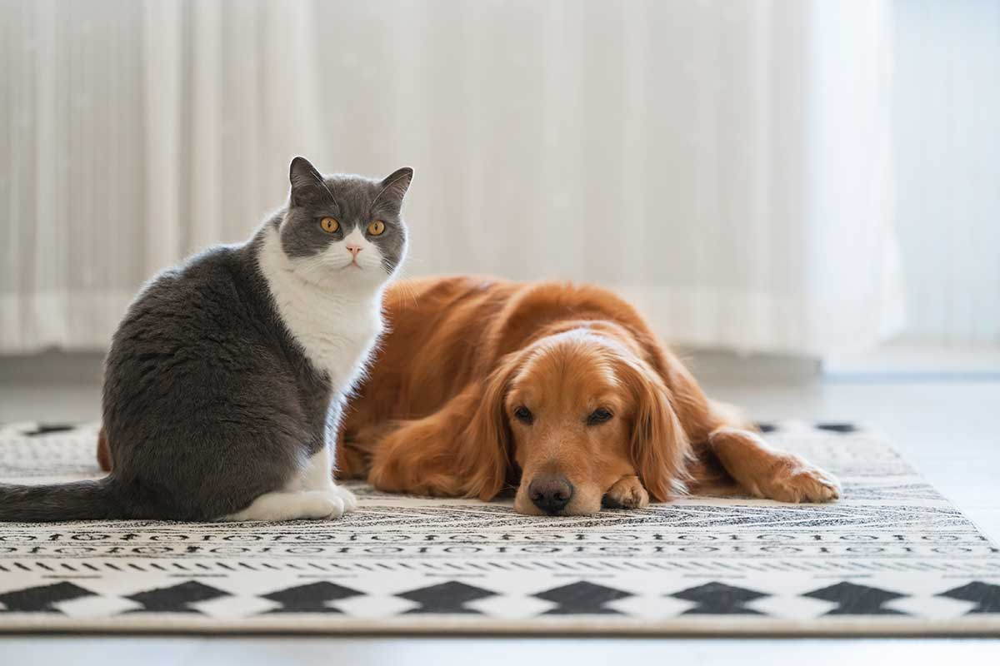
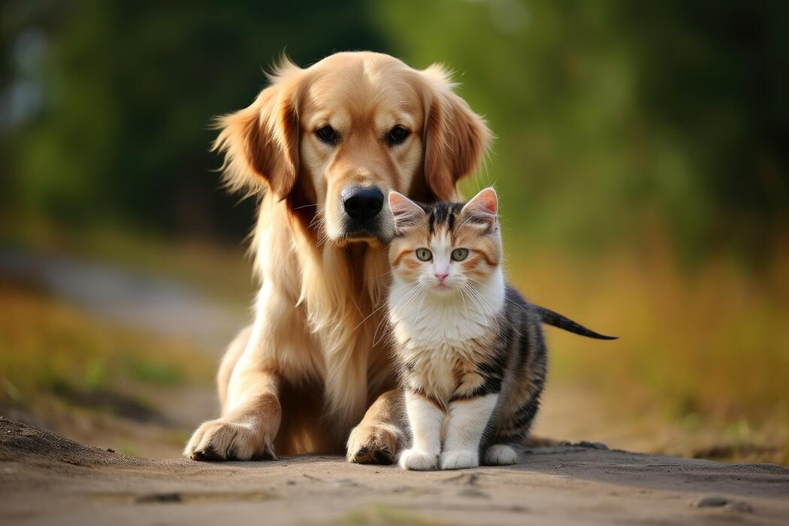

Mais procurado
Banho e tosa
Banho com produtos escolhidos para a pelagem do seu pet, secagem sem gaiola, corte de unhas e limpeza de ouvidos inclusos.
a partir de R$ 60
Agendar

Sobre a Pet Love
A Pet Love começou em 2013, numa sala pequena no bairro Trindade, com uma banheira, um secador e a certeza de que dava para atender melhor. Nada de fila, nada de animal esperando horas em gaiola: cada pet tem hora marcada e sai no mesmo turno.
Hoje somos uma equipe de oito profissionais entre tosadores, auxiliares e médicas veterinárias, em um espaço projetado para deixar o bicho calmo — piso antiderrapante, climatização e áreas separadas para cães e gatos.
Agenda com hora marcada e ambientes separados para cães e gatos.
Fotos e atualizações no WhatsApp durante todo o atendimento.
Cosméticos escolhidos conforme o tipo de pelagem e a pele de cada pet.
Nossos serviços
Do banho da semana à consulta de emergência. Escolha o serviço, agende o horário e deixe o resto com a gente.
Banho com produtos escolhidos para a pelagem do seu pet, secagem sem gaiola, corte de unhas e limpeza de ouvidos inclusos.
a partir de R$ 60
AgendarAtendimento clínico com médicas veterinárias, exames de rotina e acompanhamento de tratamentos já iniciados.
a partir de R$ 140
AgendarVacinas importadas com carteirinha digital e lembrete por WhatsApp quando chegar a data do reforço.
a partir de R$ 90
AgendarDiária com recreação, alimentação e descanso em ambiente climatizado. Você recebe fotos do dia no seu celular.
diária a partir de R$ 80
AgendarBuscamos e levamos o seu pet em carro adaptado, com caixa de transporte higienizada a cada viagem.
grátis até 5 km
AgendarRações, petiscos, brinquedos e acessórios selecionados, com entrega no mesmo dia em toda a região central.
entrega no mesmo dia
Ver catálogoOs valores variam conforme o porte e a pelagem do animal. Peça um orçamento sem compromisso